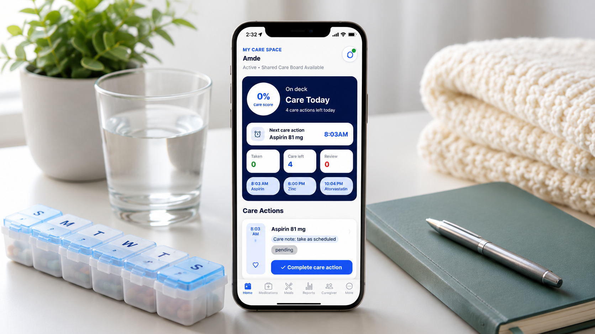
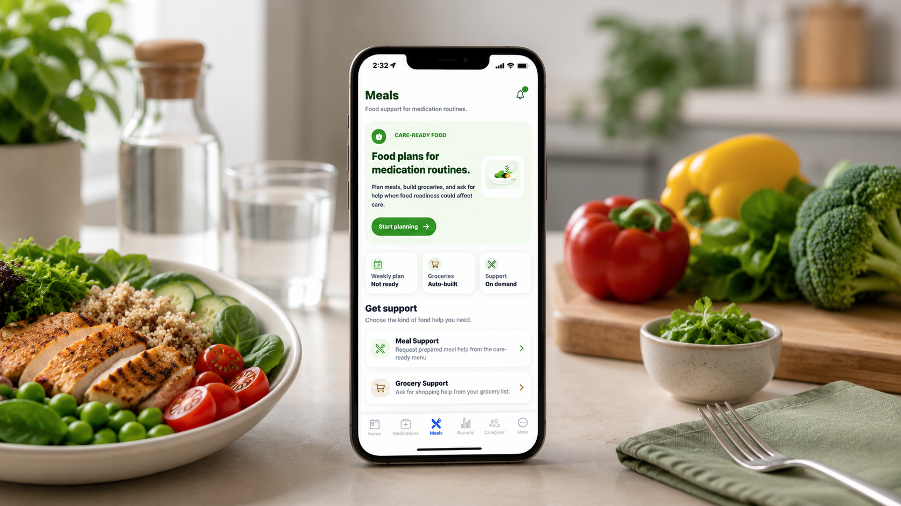
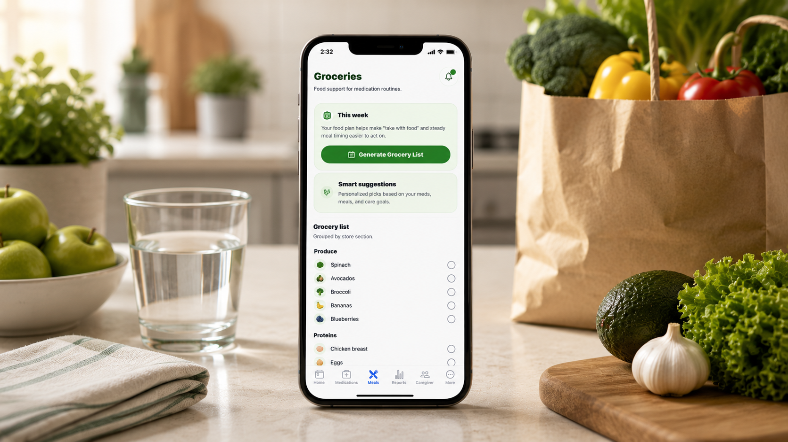
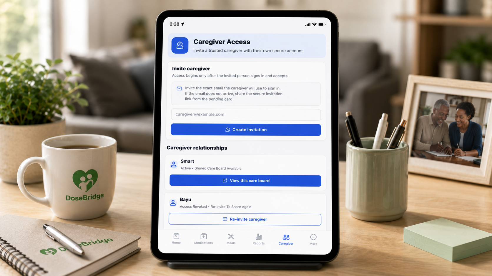

Medication-First Care Coordination
DoseBridge
An Expo and React Native application for medication schedules, reminders, shared care spaces, meal support, grocery workflows, and safety-aware AI guidance.
Care workflows
Medication schedules and dose actions connect to caregiver visibility, meal requests, and grocery support.
Backend boundaries
Validation, ownership checks, request context, and synchronized caregiver state support dependable collaboration.
Cloud delivery
The Node.js and Express API uses PostgreSQL and Supabase services and is deployed on Render.
Product Screenshots




Architecture
Expo / React Native → Node.js / Express → Supabase Auth + PostgreSQL → OpenAI guidance → Render